Designs
Through my classes and internship, I have dived into the world of UI/UX design. It has been an enriching experience creating designs that are simple, elegant, and user-friendly. A quote by a friend that I will always keep to heart:"If you have a billion dollar product but it is poorly designed, then it isn't worth anything". I hope to continue improving my design skills and merge them with my programming abilities.
Here are some of my design projects that I have worked on:
User Management Center
Link to the full write-up can be found here.
The User Management Center (UMC) design project is a project I did to explore the field of UX. The UMC’s purpose was to provide an organization with the ability to manage their users and their roles for their organization so that they may control who has access to the products and the information in the platform. My personal goal for the project was to learn and apply UX principles in a professional environment. I used the high fidelity prototyping tool Axure for designing the project.
I used an established design process, which is listed as follows:
- What problem am I trying to solve?
- How will I know that I have solved the problem?
- Define the user tasks
- Create use scenarios
- Develop and prototype the design (iteratively)
- Create UX Design notes
Throughout the process, I used the following design concepts:
- Simplicity
- Consistency
- Multiple Indications
- Accessibility
- Trade-offs
Simplicity is important. To reduce user frustration, it was important to not overcrowd and over complicate the design. I learned to omit unnecessary words to keep the design clean and easily readable. Next, consistency is key when designing. It lowers the learning curve, which means navigating through the product becomes simpler and more intuitive. I ensured my design was consistent throughout, and with society's norms.
Multiple indications creates a better interactive experience. It is important to provide multiple indications that a design has a function. Indications can include a change in color, size, shape, or text. Moving on, accessibility creates a better overall experience. As designers, we should accommodate to people who are differently abled. To ensure users can navigate the UMC smoothly, I placed a large emphasis on color contrast, size, intuitiveness, and importance of information.
Finally, trade-offs is something every designer will encounter during the design process. Trade-offs in design usually involves the design being either visually complicated and functionally simple, or simple designs that are functionally complicated.
- Iterate and get feedback regularly
- Process is more important than outcome
- Curiosity doesn’t kill the cat: Ask often!
Iterating is very important in UX. By iterating and receiving regular feedback, I continued to improve my design and its functionalities. In the beginning, I researched and designed a huge chunk of the project, and only seeked feedback after a week’s worth of work. After receiving a ton of feedback, I had to change a large portion of my work. It was then that I realized my work style meant a lot of effort was unnecessary because of the sheer amount of changes during the feedback session. Thus, I started asking for feedback regularly. This reduced my workload and improved my design skills.
The process has been tremendous. At every step of the project, I learned something new, either by observing those around me, or through the mistakes I made and feedback I received. Looking back, I am proud that my UX design skills have improved over time. On a personal development note, I am a better communicator of my ideas and work, I pick up information quicker, and work more seamlessly with the team.
Whenever I was curious, I would compile my questions and ask them during my feedback session. Oftentimes it helped clear the issue, and mistakes that were obscure would be clearer. More importantly, sometimes questions led to new ideas and improvements.
The following is an example of iteration of my tab design. For more, check out the full write up available here.
The initial tab design was a thin rectangle underneath the opened tab. This design was bad because it did not show any relation between the opened tab and current view, and was hard to see. Moreover, the view was extremely crowded and complicated, with all the information dislayed as is. After receiving feedback, the second iteration showed more relation with the current view. I also experimented with side tabs, which was well received. With the third iteration, I fixed the colors, accessibility, and further improved the overall simplicity. The final product is simple, obvious, and shows a connection between the opened tab and current view. It showed enough information for the user to make a decision. Additional information can be accessed with a simple click.

First design


Second set of designs


Third set of designs

Final design
Save Me!
The Save Me! design project is my first team design project. It was the inspiration of a friend whom I studied abroad with. Its purpose is to assist people who are lost and are in dire need of assistance. It allows users of the application to find their way home, get help from locals, contact emergency services, among other things. We used the prototyping tool Marvel App.
I used an established design process, which is listed as follows:
- Empathize
- Define
- Ideate
- Prototype
- Test
In the first step, we observe, engage and immerse ourselves within our user's problems. We conduct interviews and plan for extreme users. Moving on, the define stage helps to unpack and synthesize the information from the previous step. Here, we use design principles, and create journey maps and personas. The next three steps are part of an iterative process where we come up with ideas, prototype, test, and refine our prototype.
Throughout the process, I used the following design thinking concepts:
- Radical Collaboration
- Empatize
- Go Broad, Narrow Down
- Fail Early
- Show, Don't Tell
- Be Mindful of Process
- Disagree and commit
- Never stop redesigning
- Be observant
Teamwork is extremely important. From start to finish, my team and I grew closer as friends and colleagues. Even then, there are times when we had different opinions and ideas. It was vital to us that we could still commit to the work even if we disagreed. It was more important to us that we worked well together, rather than fight for what we think is best for the design.
We never stopped improving our design, even when a deadline was approaching. We would always think of new ideas and approaches to the problems. This chasing perfection mindset helped improve our design over the course of the project. Finally, being observant was key. We ensured we observed our interviewees and testers well, and also observed our work schedule and each other's capabilities. The opinions, body expression and words during the usability testings were pivotal in our design's directions.
Main screen
The main screen went through drastic changes. The first design was very 'old fashioned', crowded, and did not show much meaning. The icons were confusing and unclear as to what they did exactly. After a couple iterations, it was much better! The design was modern and simple, and the clear bright colors meant navigating through the app was easier.
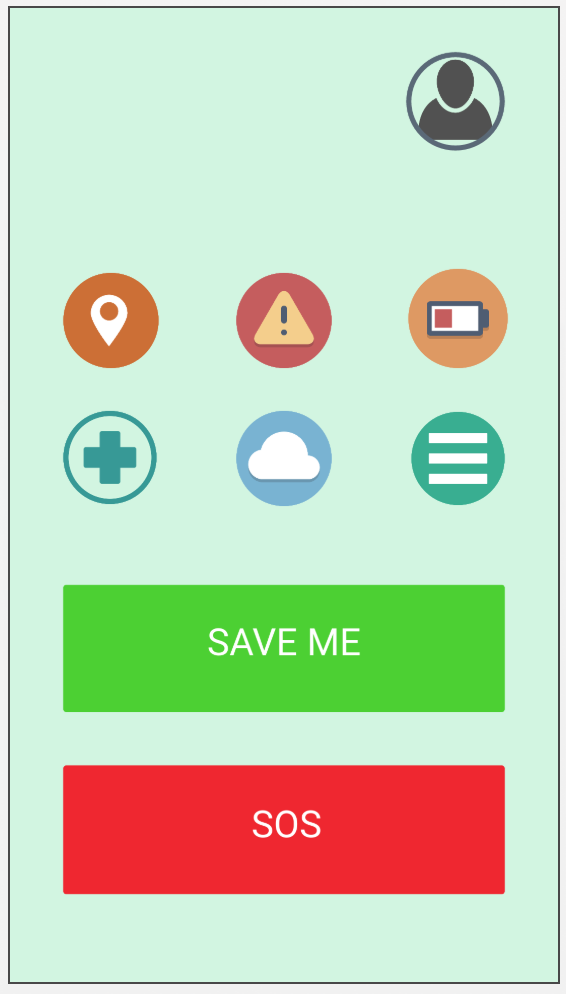 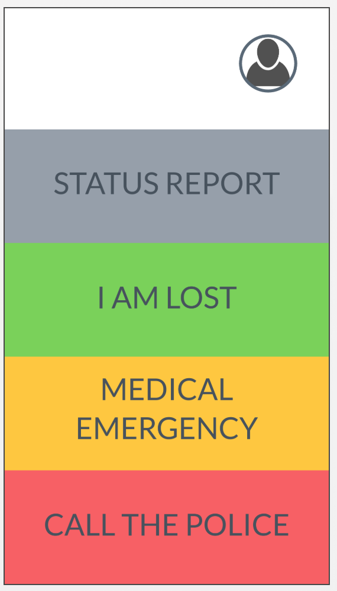The first and final design
Status Report
The first status report design was shown as is on the main screen. This made the main screen very crowded. On top of that, the pop-up nature of the status report meant no two attributes could be seen at the same time. The second design puts them all in a new page. However, the color and scheme and small texts made it not user-friendly. The final design incorporated the main screen's colors and simplicity. This showed great contrast between the different attributes. Also, the larger texts provided better usability.
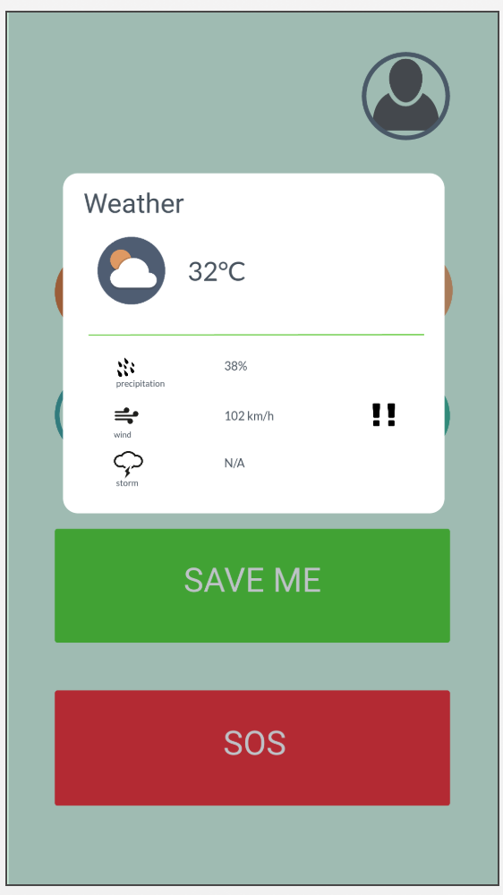 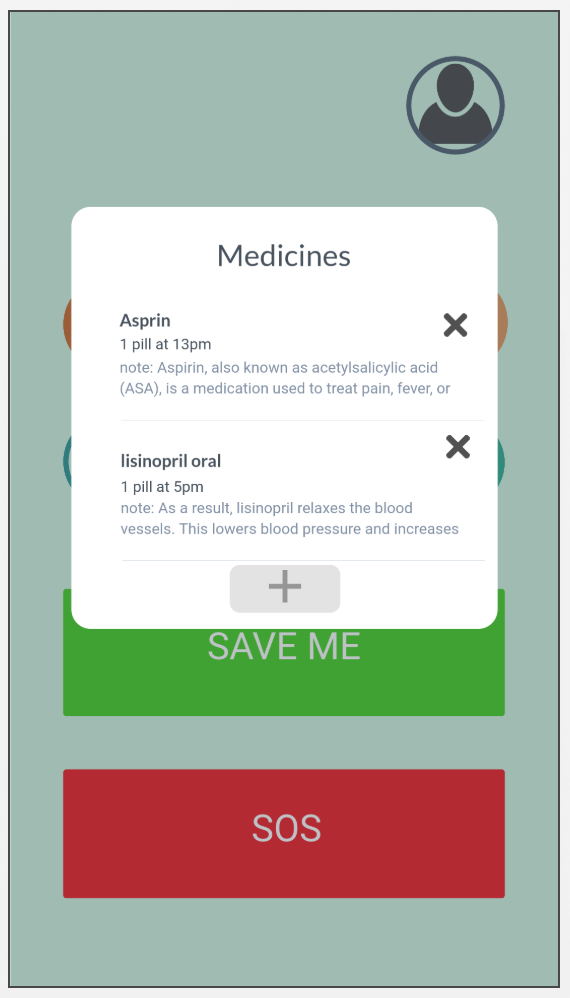First set of designs
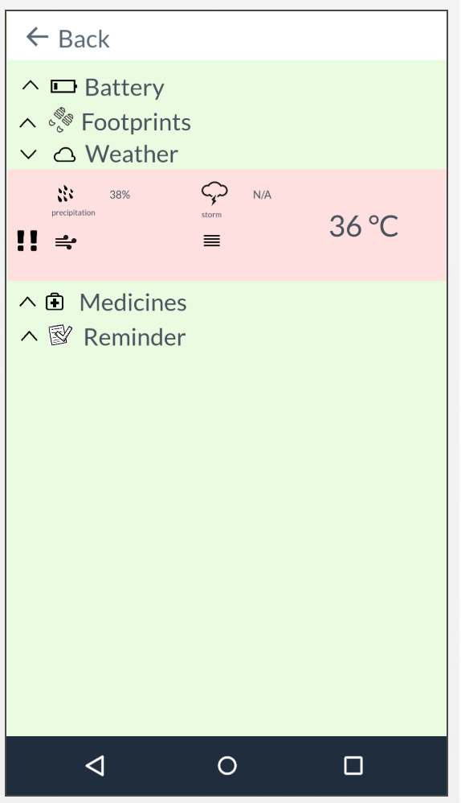 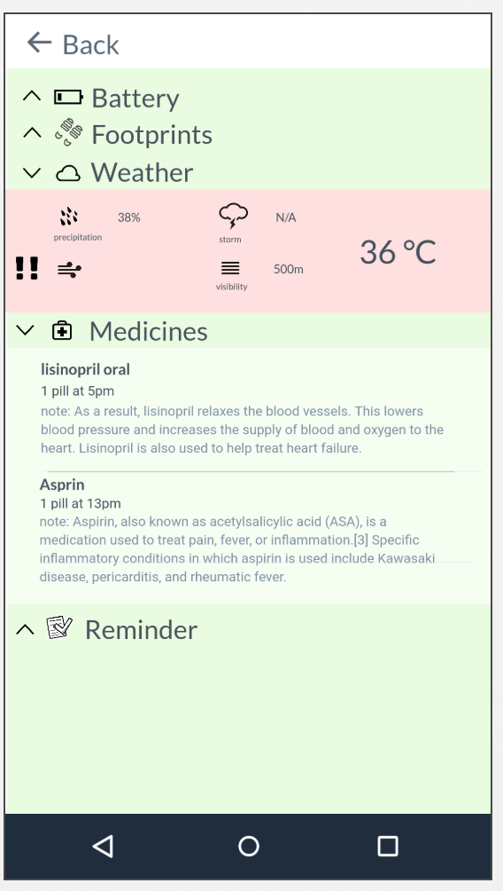
Second set of designs
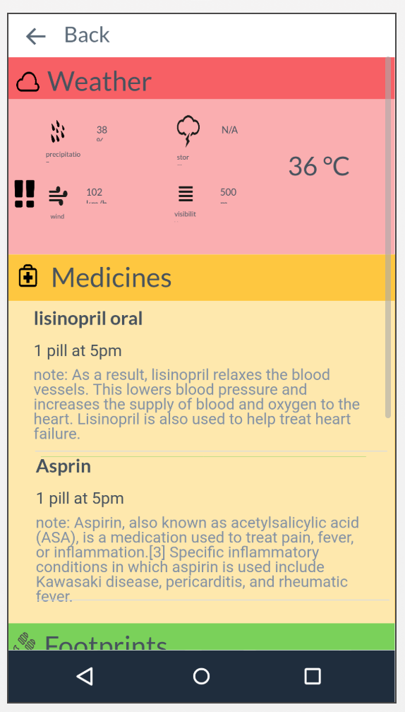
Final design
Lost
The lost function is meant to allow the user to find their way home using a backtrack method. Also, if necessary, the user can see and contact nearby users for help. This is useful for emergencies such as being lost and incapacitated, phone's battery is low, and so on.
The first design had a map and a walked path, but that was it. Nearby users was a click away, but also meant the map would be hidden. This wasn't useful, and added additional layers of complexity. Also, the back button's location was inconsistent. The second design improved by showing current users locations, but did not show additional information as to how long it took to get to them. The final design incorporated various feedbacks. It provided useful information such as bus stops, clinics/hospital locations, distance and time to get to all locations, and the amount of time needed to get back to 'home'.
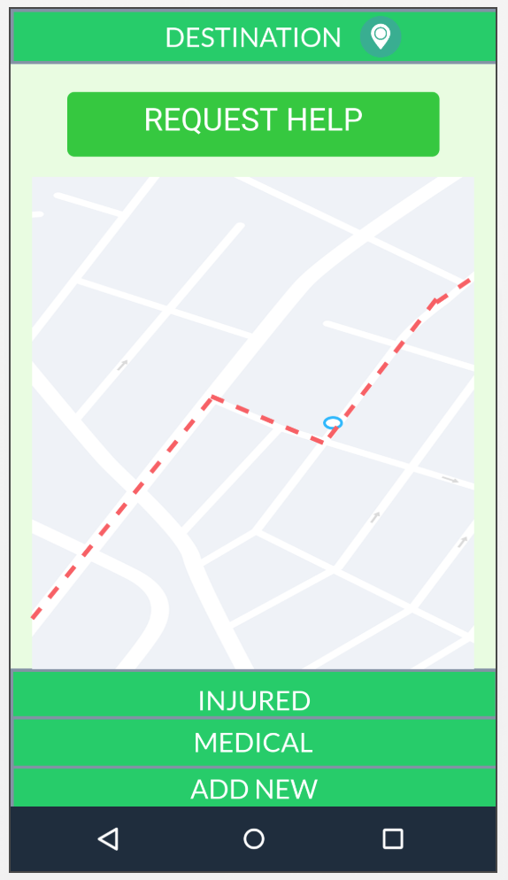 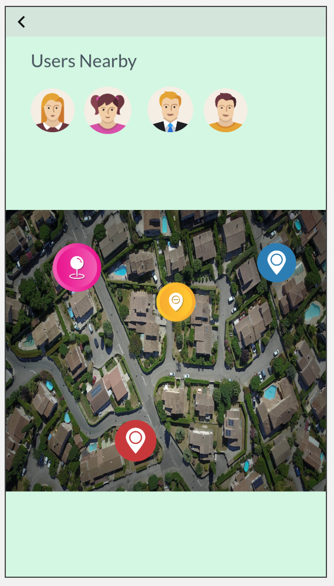First set of designs
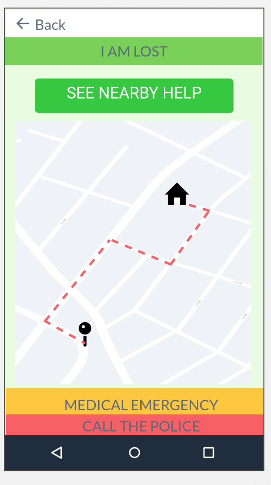 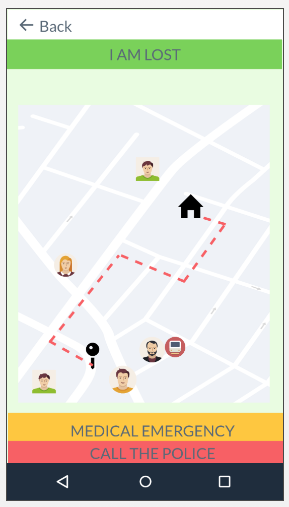
Second set of designs
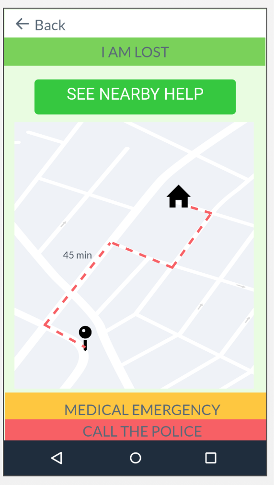 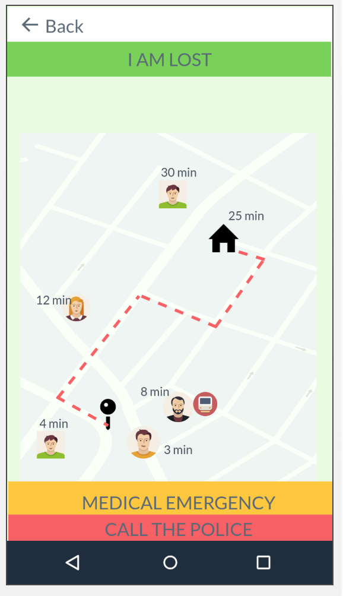 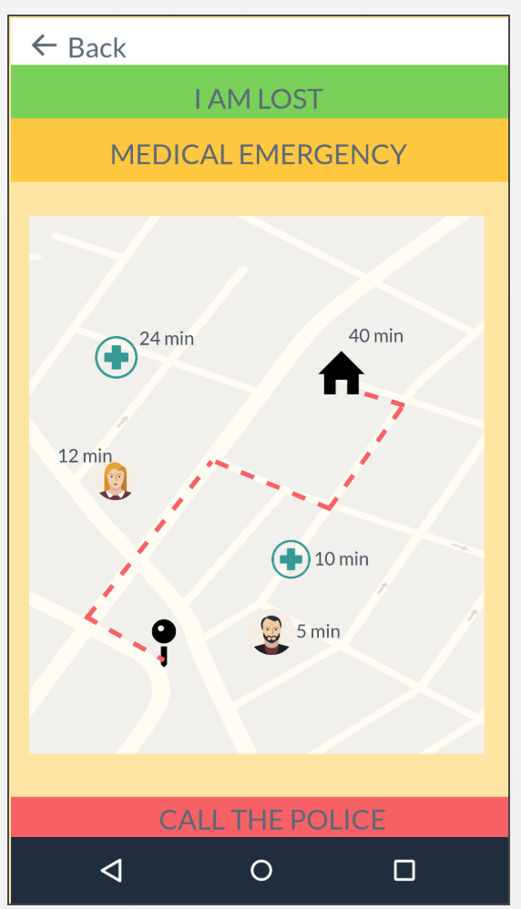
Final design